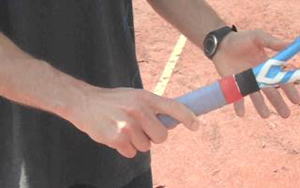

Previous: Ball Watching - Part 3 | 🏠 Classic Lessons Home | Next: Building the Spanish Forehand
Building invincible volleys
Comprehensive unified tennis knowledge base — Fundamentals, Stroke Analysis, Reference Library, and more
Building Invincible Volleys Part 2:Two Primary Styles
Chris Lewit
The slice style and the flat style on both sides.
When I look at elite volley technique, I see a fundamental bifurcation - flat style and slice style. Sometimes players use a combination of both depending on the tactical situation.
I call the slice style the "Israeli style" because the nuances were first taught to me by my coach Gilad Bloom, the former Israeli Davis Cup player. In this article let me outline the technical parameters I use when building both invincible flat and slice volleys.
Flat Style and Israeli Style Compared
Both styles of volley are good and valid and both can be used effectively at the high levels of the game. In fact, most players may benefit from learning both styles and I teach both to my students.
The flat style volley is simple and practical. The Israeli style is elegant and more complex.
Many times, I will advise my students to volley the ball more Israeli style on sharp angle, transitional, low, or slower balls and to use the flat style on reflex and fast balls or power put away volleys.
Max Mirni: a great example of flat style.
For this reason, you often see the flat style in great doubles players who have to play a lot of reflex and power volleys. Think Max Mirnyi or the Bryan brothers.
Singles players who venture to net have more time and opportunity to play slice and sidespin volleys, although you will also see some spin volleys in doubles on slow balls and angle/drop shots and transition first volleys.
In general, you typically see more slice on backhand volleys, but the Israeli style taught to me emphasizes slice on the forehand volley as well. That's a primary difference.
I explain to my students that there are two different ways to prepare the racquet and two different effects on the ball - flat or slice.
But I also introduce the concept of a third effect - sidespin. Bottom line is that I want my players to choose the desired effect and technique to use based on the tactical situation and their intention.
The slice volleys are prepared with the racket face open.
Preparation
The forehand and backhand slice volley is prepared with the racquet face very open - it almost looks too open - and entails a more extreme downward flight path of the racquet to the incoming ball, to compensate for the extremely open racquet face.
The flatter the volley, the more the racquet face is prepared closer to vertical or slightly open. The primary focus is to get the hand and racquet face behind the incoming ball - "square the racquet face," as coaches say - and drive through the ball with good extension through the impact.
Toni Nadal calls this extension through the ball "the accompaniment." It's critical to extend through impact - to accompany the ball well - if you want to get a good response and good control of the volley. This is true of any volley, except perhaps extreme angle and cut volleys, which are sharply grazed.
As the name implies, the flat volley typically has little if rotation (spin) on the ball. It is a simple, straight shot.
The flat volley are shape is more of a U. The slice volley more of a V.
The slice volley is differentiated by higher levels of RPM, typically backspin and sometimes sidespin - which can make the ball skid, die out, and curve.
In general, the backhand volley has been shown to have higher levels of backspin than the forehand volley, but with the Israeli technique, the forehand volley is a lot slicier and can sometimes reach RPM levels similar to the backhand volley spin rates.
The flat volley style shows the ubiquitous U-shape preparation, which John Yandell has analyzed in detail. (See his volley articles in the Classic Lessons this month.) The slice forehand volley style generally has more of a wider angled V shape preparation of the racquet, wrist, and arm. On the backhand volley the U shape preparations is similar in both styles.
Grip

The Israeli slice grip is an extreme continental.
The flat volley uses a stronger forehand grip, in between Continental and Eastern or weaker Continental. Some flat style volleyers have a small grip change between the forehand and backhand volley.
The less Continental the grip, the flatter the forehand volley. The more continental the grip, the flatter the backhand volley.
To say it another way: moving more towards the backhand grip equals higher spin rates on the forehand volley. More towards the forehand grip equals higher spin rates on the backhand volley.
The Israeli volley typically uses an extreme continental, closer to a backhand grip, which helps impart more spin on the forehand volley. The grips used will affect RPM rates on the volley but ultimately the swing path and racquet face angle will be more determinant of whether the ball is struck flat or with slice.
Swing Path
The swing path for a flat volley is slightly high to low or linear, depending on the height of the ball. Sometimes players will even stab at the ball with subtle topspin on stretch volleys the way the great Patrick Rafter used to do.
Sometimes flatter volleys will use slight topspin on stretch volleys.
Israeli technique on the volley dictates an extreme open racquet face and sharp downward slope of the swing path to generate higher slice RPM rates. On low balls the downward swing path is closer to linear.
In general, a sharper downward swing path is required because of the more open racquet face. Without enough downward swing path, the open racquet face, like a sand wedge in golf, will pop the ball up.
On stretch, this style of volley will "cut" the ball with backspin and sidespin rather than the topspin stretch volley style of Rafter. On drop volleys with heavy backspin - the most extreme version of slice volleys - the swing path is near flat linear with a very open racquet face.
Shoulder Turn
The Israeli volley have a sharper downward swing path.
The shoulder turn for the flat forehand volley is slightly less extreme than with the Israeli volley. The grip on the Israeli volley dictates a more extreme shoulder turn to comfortably prepare the racquet face on the forehand side.
This is one reason that I favor a flatter volley style on fast incoming balls. Not only is it simpler to execute under duress, but the skill requires less shoulder turn and less time.
The slice volley can be hit open stance and open shoulders, but it's more difficult to execute and you have to lay the wrist back in an extreme way. And you hit the ball with a slightly weaker hand position.
Footwork
On almost all volleys, it is important to step forward aggressively and generally try to make contact while the front foot is still in the air. While some situations will dictate that the front foot strikes the ground before or at the same time as the impact with the ball, I always want my students to attempt a power lunge step and impact the ball with the front foot midflight.
On the flat forehand volley the shoulder turn is less extreme.
I tell my students to "synchronize" their power step with their arm and hand movement forward.
Impact the ball with the front foot in mid flight.
Two Hands Or One?
There is much current debate about whether players should start with two hands or one hand on the volley and whether a two handed volley is viable at the pro level.
I usually encourage single handed volleys, but I always have an open mind and let some players experiment with two if they feel more comfortable.
I always encourage two hands for backhand half volley (for two handed backhand players) and reflex volleys, when the ball is coming at high speed. You see this a lot in modern world class doubles. I would not discourage two hands in these situations.
If I have a kid with two hands on regular volleys, that's fine with me, but I insist he or she learn one handed options when stretched wide for better reach.
The Finish
The flat forehand volley typically has a more vertical racquet face through impact and finish, although John Yandell has demonstrated the that the wrist and racquet face can sometimes open up to the sky after impact, a movement probably dependent on the speed, spin, and angle of impact of the incoming ball.
However, the slice volley - already more open at the start - is almost always finished with a rotation of the wrist and a subsequent opening of the racquet face to the sky.
The slice volley is almost always finished with wrist rotation, opening the racket face to the sky.
The Israeli style emphasizes slightly more sideways chest position at impact and at the completion of the stroke. The flat volley tends to be more open with the shoulders at finish.
Final Thoughts
I encourage readers to experiment with both slice and flat volley techniques. I teach my players variations of both for a more complete volley repertoire.
For example, players can be taught to "cut" drop shots and angle shots, and to slice approach volleys, while at the same time learning straight flat volleys for reaction and power shots. Players should know how to apply different effects of spin on the ball when volleying, including sidespin.
High level volleying is not as simple as a mere flat block!

Chris Lewit, former #1 for Cornell and Pro Circuit player, has coached numerous top 10 nationally ranked juniors and is a leading coach, educator, and author. He has written two best-selling books, The Secrets of Spanish Tennis and The Tennis Technique Bible.
Chris runs a popular high performance summer tennis camp in the beautiful mountains of Vermont and coaches players world-wide through his virtual school, CLTA Online (CLTA.teachable.com).
Chris also produces a weekly high performance tennis video talk show and podcast, The Prodigy Maker Show, which is available on Apple Podcasts and all other podcasting directories. All shows can be accessed at ProdigyMaker.com.
Check out Chris's blog, also at ProdigyMaker.com for free articles on high performance junior development and Spanish training. Learn about his camp at ChrisLewit.com or visit the online academy at CLTA.teachable.com

The Secrets of Spanish Tennis
What makes Spanish tennis so unique and successful? What exactly are those Spanish coaches doing so differently to develop superstars like Rafael Nadal and David Ferrer that other systems are not doing? These and other questions are answered in The Secrets of Spanish Tennis, the culmination of five years of study on the Spanish way of training by USTA High Performance Coach Chris Lewit.
Click Here to Order!
Source: tennisplayer.net archive — Building Invincible Volleys.docx (John Yandell teaching library, 2002-2022). Extracted and rendered as HTML for Tennis Future Lab.